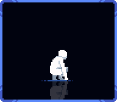

参照你选的第二套：髋部下沉、膝盖前移、小腿向脚踝收回。先看侧面的六帧采集动作。

原图镜像朝左，便于对照。原参考为六帧蹲姿起伏，不包含完整站起过程。
原来的四帧采集，用相同周期对照。横线为地面。
站立 → 下蹲 → 伸手采集 → 起身。当前仅左向。
重点观察 F2、F3 的膝甲与大腿、小腿是否连贯。各帧统一尺度，以鞋底落地点平移对齐，未逐帧拉伸。生图仍重画了部分装甲与靴形，因此这是动作方向试样，尚未替换游戏资源。